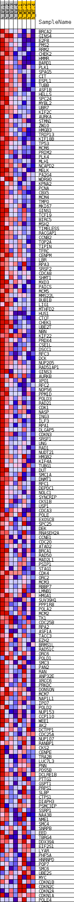
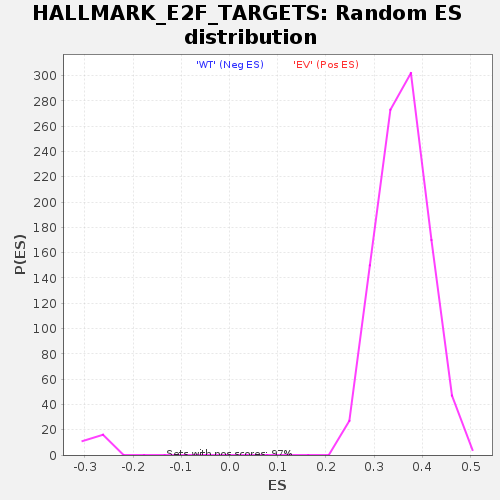

| | | Dataset | EV_WT_express.EV_WT.cls#EV_versus_WT |
| Phenotype | EV_WT.cls#EV_versus_WT |
| Upregulated in class | EV |
| GeneSet | HALLMARK_E2F_TARGETS |
| Enrichment Score (ES) | 0.576618 |
| Normalized Enrichment Score (NES) | 1.6021868 |
| Nominal p-value | 0.0 |
| FDR q-value | 0.009541677 |
| FWER p-Value | 0.009 |
Table: GSEA Results Summary
 Fig 1: Enrichment plot: HALLMARK_E2F_TARGETS
Fig 1: Enrichment plot: HALLMARK_E2F_TARGETS
Profile of the Running ES Score & Positions of GeneSet Members on the Rank Ordered List
| SYMBOL | TITLE | RANK IN GENE LIST | RANK METRIC SCORE | RUNNING ES | CORE ENRICHMENT | | 1 | BRCA2 | NNN | 1918 | 0.688 | -0.0181 | Yes |
| 2 | GINS4 | NNN | 2895 | 0.628 | -0.0214 | Yes |
| 3 | E2F8 | NNN | 2917 | 0.625 | -0.0085 | Yes |
| 4 | PMS2 | NNN | 3864 | 0.552 | -0.0129 | Yes |
| 5 | RRM2 | NNN | 3902 | 0.548 | -0.0019 | Yes |
| 6 | CHEK2 | NNN | 3983 | 0.544 | 0.0082 | Yes |
| 7 | HMMR | NNN | 4675 | 0.495 | 0.0069 | Yes |
| 8 | BARD1 | NNN | 4724 | 0.491 | 0.0166 | Yes |
| 9 | PLK1 | NNN | 4892 | 0.480 | 0.0239 | Yes |
| 10 | SPAG5 | NNN | 4956 | 0.475 | 0.0329 | Yes |
| 11 | CIT | NNN | 5323 | 0.457 | 0.0364 | Yes |
| 12 | ESPL1 | NNN | 5631 | 0.448 | 0.0406 | Yes |
| 13 | TUBB | NNN | 6142 | 0.436 | 0.0412 | Yes |
| 14 | ASF1B | NNN | 6206 | 0.433 | 0.0493 | Yes |
| 15 | HELLS | NNN | 6330 | 0.427 | 0.0563 | Yes |
| 16 | SPC24 | NNN | 6582 | 0.417 | 0.0609 | Yes |
| 17 | MYBL2 | NNN | 7448 | 0.410 | 0.0548 | Yes |
| 18 | UBR7 | NNN | 7491 | 0.408 | 0.0627 | Yes |
| 19 | KIF2C | NNN | 7562 | 0.405 | 0.0701 | Yes |
| 20 | AURKA | NNN | 7648 | 0.401 | 0.0772 | Yes |
| 21 | STMN1 | NNN | 7696 | 0.399 | 0.0849 | Yes |
| 22 | ZW10 | NNN | 7759 | 0.396 | 0.0922 | Yes |
| 23 | HMGB3 | NNN | 7824 | 0.393 | 0.0995 | Yes |
| 24 | TRIP13 | NNN | 8014 | 0.387 | 0.1045 | Yes |
| 25 | KIF18B | NNN | 8030 | 0.387 | 0.1124 | Yes |
| 26 | TP53 | NNN | 8076 | 0.384 | 0.1198 | Yes |
| 27 | MCM6 | NNN | 8166 | 0.380 | 0.1263 | Yes |
| 28 | PRIM2 | NNN | 8286 | 0.375 | 0.1323 | Yes |
| 29 | PLK4 | NNN | 8323 | 0.373 | 0.1396 | Yes |
| 30 | MLH1 | NNN | 8341 | 0.372 | 0.1472 | Yes |
| 31 | NCAPD2 | NNN | 8354 | 0.372 | 0.1548 | Yes |
| 32 | MELK | NNN | 8405 | 0.369 | 0.1618 | Yes |
| 33 | PA2G4 | NNN | 8411 | 0.369 | 0.1696 | Yes |
| 34 | WDR90 | NNN | 8428 | 0.368 | 0.1771 | Yes |
| 35 | KPNA2 | NNN | 8476 | 0.366 | 0.1841 | Yes |
| 36 | PCNA | NNN | 8570 | 0.363 | 0.1902 | Yes |
| 37 | CBX5 | NNN | 8590 | 0.362 | 0.1975 | Yes |
| 38 | MCM4 | NNN | 8663 | 0.360 | 0.2040 | Yes |
| 39 | TMPO | NNN | 8740 | 0.359 | 0.2103 | Yes |
| 40 | MKI67 | NNN | 8780 | 0.357 | 0.2172 | Yes |
| 41 | GINS1 | NNN | 10473 | 0.355 | 0.1959 | Yes |
| 42 | TCF19 | NNN | 10476 | 0.355 | 0.2034 | Yes |
| 43 | BIRC5 | NNN | 10562 | 0.352 | 0.2094 | Yes |
| 44 | MSH2 | NNN | 10611 | 0.350 | 0.2160 | Yes |
| 45 | TIMELESS | NNN | 10665 | 0.348 | 0.2225 | Yes |
| 46 | RACGAP1 | NNN | 11020 | 0.342 | 0.2237 | Yes |
| 47 | CCNB2 | NNN | 11156 | 0.336 | 0.2285 | Yes |
| 48 | TOP2A | NNN | 11493 | 0.327 | 0.2297 | Yes |
| 49 | TIPIN | NNN | 11527 | 0.326 | 0.2361 | Yes |
| 50 | TFRC | NNN | 11536 | 0.325 | 0.2428 | Yes |
| 51 | CENPM | NNN | 11647 | 0.322 | 0.2478 | Yes |
| 52 | LBR | NNN | 11818 | 0.315 | 0.2516 | Yes |
| 53 | RPA3 | NNN | 11846 | 0.315 | 0.2578 | Yes |
| 54 | SRSF2 | NNN | 11849 | 0.315 | 0.2645 | Yes |
| 55 | CDCA8 | NNN | 11888 | 0.313 | 0.2705 | Yes |
| 56 | SHMT1 | NNN | 11954 | 0.311 | 0.2760 | Yes |
| 57 | MXD3 | NNN | 12160 | 0.305 | 0.2790 | Yes |
| 58 | PAICS | NNN | 12171 | 0.305 | 0.2853 | Yes |
| 59 | MCM5 | NNN | 12285 | 0.302 | 0.2897 | Yes |
| 60 | MMS22L | NNN | 12299 | 0.301 | 0.2959 | Yes |
| 61 | BUB1B | NNN | 12457 | 0.299 | 0.2996 | Yes |
| 62 | LIG1 | NNN | 12515 | 0.297 | 0.3049 | Yes |
| 63 | MTHFD2 | NNN | 12595 | 0.295 | 0.3098 | Yes |
| 64 | HUS1 | NNN | 12622 | 0.295 | 0.3156 | Yes |
| 65 | CTCF | NNN | 12651 | 0.294 | 0.3214 | Yes |
| 66 | CHEK1 | NNN | 12729 | 0.292 | 0.3263 | Yes |
| 67 | UBE2T | NNN | 12764 | 0.290 | 0.3319 | Yes |
| 68 | NBN | NNN | 12809 | 0.289 | 0.3372 | Yes |
| 69 | KIF22 | NNN | 12860 | 0.288 | 0.3425 | Yes |
| 70 | PRDX4 | NNN | 12917 | 0.286 | 0.3476 | Yes |
| 71 | CSE1L | NNN | 12921 | 0.285 | 0.3536 | Yes |
| 72 | DSCC1 | NNN | 12931 | 0.285 | 0.3595 | Yes |
| 73 | RFC3 | NNN | 12933 | 0.285 | 0.3655 | Yes |
| 74 | DCK | NNN | 13032 | 0.282 | 0.3699 | Yes |
| 75 | NUP205 | NNN | 13291 | 0.276 | 0.3713 | Yes |
| 76 | RAD51AP1 | NNN | 13302 | 0.275 | 0.3770 | Yes |
| 77 | GINS3 | NNN | 13403 | 0.273 | 0.3811 | Yes |
| 78 | AURKB | NNN | 13494 | 0.270 | 0.3853 | Yes |
| 79 | XPO1 | NNN | 13508 | 0.270 | 0.3908 | Yes |
| 80 | RFC2 | NNN | 13568 | 0.268 | 0.3955 | Yes |
| 81 | NOP56 | NNN | 13655 | 0.266 | 0.3997 | Yes |
| 82 | PPM1D | NNN | 14038 | 0.256 | 0.3986 | Yes |
| 83 | POLD3 | NNN | 14088 | 0.255 | 0.4032 | Yes |
| 84 | RAD21 | NNN | 14202 | 0.252 | 0.4066 | Yes |
| 85 | CDK1 | NNN | 14209 | 0.252 | 0.4118 | Yes |
| 86 | NASP | NNN | 14528 | 0.247 | 0.4116 | Yes |
| 87 | ING3 | NNN | 14669 | 0.243 | 0.4144 | Yes |
| 88 | ILF3 | NNN | 14688 | 0.243 | 0.4193 | Yes |
| 89 | RPA1 | NNN | 14849 | 0.239 | 0.4216 | Yes |
| 90 | DLGAP5 | NNN | 14850 | 0.239 | 0.4267 | Yes |
| 91 | CDKN3 | NNN | 14857 | 0.239 | 0.4316 | Yes |
| 92 | SRSF1 | NNN | 14878 | 0.238 | 0.4363 | Yes |
| 93 | UNG | NNN | 14883 | 0.238 | 0.4413 | Yes |
| 94 | RAD1 | NNN | 14947 | 0.237 | 0.4453 | Yes |
| 95 | NUDT21 | NNN | 14955 | 0.237 | 0.4502 | Yes |
| 96 | HMGB2 | NNN | 14973 | 0.236 | 0.4549 | Yes |
| 97 | KIF4A | NNN | 15056 | 0.234 | 0.4585 | Yes |
| 98 | TUBG1 | NNN | 15124 | 0.232 | 0.4623 | Yes |
| 99 | DUT | NNN | 15335 | 0.232 | 0.4636 | Yes |
| 100 | SMC1A | NNN | 15352 | 0.231 | 0.4682 | Yes |
| 101 | DNMT1 | NNN | 15396 | 0.230 | 0.4724 | Yes |
| 102 | RFC1 | NNN | 15477 | 0.228 | 0.4759 | Yes |
| 103 | DEPDC1 | NNN | 15481 | 0.228 | 0.4807 | Yes |
| 104 | NOLC1 | NNN | 15665 | 0.224 | 0.4823 | Yes |
| 105 | SYNCRIP | NNN | 15723 | 0.223 | 0.4860 | Yes |
| 106 | CKS1B | NNN | 15801 | 0.221 | 0.4894 | Yes |
| 107 | USP1 | NNN | 15920 | 0.218 | 0.4920 | Yes |
| 108 | CDCA3 | NNN | 15964 | 0.217 | 0.4959 | Yes |
| 109 | POLE | NNN | 15967 | 0.217 | 0.5005 | Yes |
| 110 | EXOSC8 | NNN | 16102 | 0.214 | 0.5027 | Yes |
| 111 | SPC25 | NNN | 16133 | 0.213 | 0.5067 | Yes |
| 112 | DEK | NNN | 16141 | 0.213 | 0.5111 | Yes |
| 113 | RNASEH2A | NNN | 16162 | 0.213 | 0.5153 | Yes |
| 114 | CCNE1 | NNN | 16228 | 0.211 | 0.5187 | Yes |
| 115 | CDC20 | NNN | 16233 | 0.211 | 0.5231 | Yes |
| 116 | ATAD2 | NNN | 16329 | 0.209 | 0.5259 | Yes |
| 117 | BRCA1 | NNN | 16330 | 0.209 | 0.5303 | Yes |
| 118 | RAD50 | NNN | 16371 | 0.208 | 0.5341 | Yes |
| 119 | MAD2L1 | NNN | 16379 | 0.208 | 0.5384 | Yes |
| 120 | PSIP1 | NNN | 16523 | 0.206 | 0.5403 | Yes |
| 121 | STAG1 | NNN | 16603 | 0.204 | 0.5433 | Yes |
| 122 | CDK4 | NNN | 16797 | 0.199 | 0.5442 | Yes |
| 123 | ORC2 | NNN | 17032 | 0.194 | 0.5443 | Yes |
| 124 | MCM3 | NNN | 17090 | 0.193 | 0.5474 | Yes |
| 125 | RBBP7 | NNN | 17269 | 0.188 | 0.5484 | Yes |
| 126 | LMNB1 | NNN | 17351 | 0.186 | 0.5510 | Yes |
| 127 | HMGA1 | NNN | 17862 | 0.174 | 0.5460 | Yes |
| 128 | SUV39H1 | NNN | 18082 | 0.168 | 0.5458 | Yes |
| 129 | PPP1R8 | NNN | 18109 | 0.167 | 0.5489 | Yes |
| 130 | POLA2 | NNN | 18118 | 0.167 | 0.5523 | Yes |
| 131 | MCM2 | NNN | 18130 | 0.167 | 0.5557 | Yes |
| 132 | TK1 | NNN | 18432 | 0.166 | 0.5541 | Yes |
| 133 | CDC25B | NNN | 18477 | 0.165 | 0.5568 | Yes |
| 134 | RPA2 | NNN | 18540 | 0.164 | 0.5593 | Yes |
| 135 | ASF1A | NNN | 18814 | 0.159 | 0.5580 | Yes |
| 136 | TACC3 | NNN | 18940 | 0.156 | 0.5592 | Yes |
| 137 | EZH2 | NNN | 18948 | 0.156 | 0.5624 | Yes |
| 138 | BRMS1L | NNN | 18978 | 0.156 | 0.5652 | Yes |
| 139 | RAD51C | NNN | 19127 | 0.152 | 0.5659 | Yes |
| 140 | ORC6 | NNN | 19131 | 0.152 | 0.5690 | Yes |
| 141 | POLD1 | NNN | 19302 | 0.148 | 0.5693 | Yes |
| 142 | SMC3 | NNN | 19407 | 0.146 | 0.5706 | Yes |
| 143 | PAN2 | NNN | 19505 | 0.144 | 0.5720 | Yes |
| 144 | RAN | NNN | 19889 | 0.135 | 0.5684 | Yes |
| 145 | ANP32E | NNN | 20025 | 0.132 | 0.5689 | Yes |
| 146 | XRCC6 | NNN | 20030 | 0.132 | 0.5716 | Yes |
| 147 | PRKDC | NNN | 20223 | 0.128 | 0.5710 | Yes |
| 148 | DONSON | NNN | 20298 | 0.127 | 0.5725 | Yes |
| 149 | MCM7 | NNN | 20317 | 0.127 | 0.5749 | Yes |
| 150 | NAP1L1 | NNN | 20488 | 0.123 | 0.5746 | Yes |
| 151 | IPO7 | NNN | 20798 | 0.116 | 0.5718 | Yes |
| 152 | POLD2 | NNN | 20807 | 0.116 | 0.5741 | Yes |
| 153 | NUP153 | NNN | 20882 | 0.114 | 0.5753 | Yes |
| 154 | CCP110 | NNN | 20944 | 0.113 | 0.5766 | Yes |
| 155 | WEE1 | NNN | 21177 | 0.107 | 0.5749 | No |
| 156 | AK2 | NNN | 21602 | 0.098 | 0.5698 | No |
| 157 | DCTPP1 | NNN | 21604 | 0.098 | 0.5719 | No |
| 158 | CDC25A | NNN | 21801 | 0.093 | 0.5705 | No |
| 159 | NUP107 | NNN | 21828 | 0.093 | 0.5720 | No |
| 160 | RANBP1 | NNN | 21878 | 0.092 | 0.5731 | No |
| 161 | CKS2 | NNN | 21987 | 0.089 | 0.5732 | No |
| 162 | CENPE | NNN | 22061 | 0.087 | 0.5738 | No |
| 163 | TRA2B | NNN | 22176 | 0.085 | 0.5736 | No |
| 164 | LUC7L3 | NNN | 22367 | 0.081 | 0.5721 | No |
| 165 | PNN | NNN | 22430 | 0.079 | 0.5727 | No |
| 166 | PDS5B | NNN | 22448 | 0.079 | 0.5741 | No |
| 167 | DCLRE1B | NNN | 22530 | 0.077 | 0.5744 | No |
| 168 | PTTG1 | NNN | 23177 | 0.060 | 0.5646 | No |
| 169 | GSPT1 | NNN | 23182 | 0.060 | 0.5658 | No |
| 170 | PRPS1 | NNN | 23256 | 0.057 | 0.5658 | No |
| 171 | SLBP | NNN | 23549 | 0.049 | 0.5618 | No |
| 172 | CTPS1 | NNN | 23557 | 0.049 | 0.5628 | No |
| 173 | DIAPH3 | NNN | 23767 | 0.043 | 0.5601 | No |
| 174 | PSMC3IP | NNN | 23954 | 0.037 | 0.5577 | No |
| 175 | SSRP1 | NNN | 24171 | 0.031 | 0.5547 | No |
| 176 | NAA38 | NNN | 24223 | 0.028 | 0.5544 | No |
| 177 | NME1 | NNN | 24271 | 0.027 | 0.5542 | No |
| 178 | SMC4 | NNN | 24410 | 0.022 | 0.5523 | No |
| 179 | SNRPB | NNN | 24496 | 0.018 | 0.5512 | No |
| 180 | EED | NNN | 24623 | 0.012 | 0.5493 | No |
| 181 | TBRG4 | NNN | 24666 | 0.010 | 0.5488 | No |
| 182 | DDX39A | NNN | 47562 | -0.006 | 0.1585 | No |
| 183 | EIF2S1 | NNN | 47654 | -0.012 | 0.1572 | No |
| 184 | LYAR | NNN | 47890 | -0.026 | 0.1537 | No |
| 185 | PHF5A | NNN | 48260 | -0.044 | 0.1484 | No |
| 186 | HNRNPD | NNN | 48352 | -0.047 | 0.1478 | No |
| 187 | POP7 | NNN | 48747 | -0.065 | 0.1425 | No |
| 188 | SMC6 | NNN | 49247 | -0.085 | 0.1358 | No |
| 189 | UBE2S | NNN | 49294 | -0.088 | 0.1369 | No |
| 190 | MYC | NNN | 49465 | -0.095 | 0.1360 | No |
| 191 | CDKN1B | NNN | 49750 | -0.106 | 0.1334 | No |
| 192 | CDKN2C | NNN | 51446 | -0.177 | 0.1083 | No |
| 193 | CDKN2A | NNN | 51646 | -0.190 | 0.1089 | No |
| 194 | CDKN1A | NNN | 52129 | -0.226 | 0.1055 | No |
| 195 | POLE4 | NNN | 55814 | -0.414 | 0.0514 | No |
Table: GSEA details [plain text format]

Fig 2: HALLMARK_E2F_TARGETS
Blue-Pink O' Gram in the Space of the Analyzed GeneSet

Fig 3: HALLMARK_E2F_TARGETS: Random ES distribution
Gene set null distribution of ES for HALLMARK_E2F_TARGETS